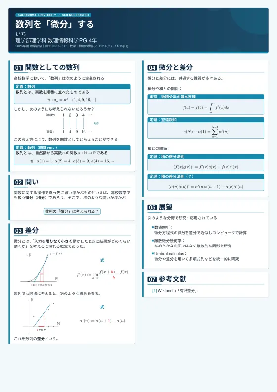
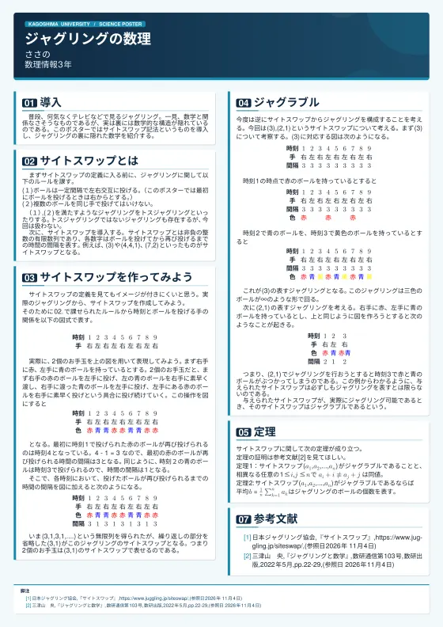
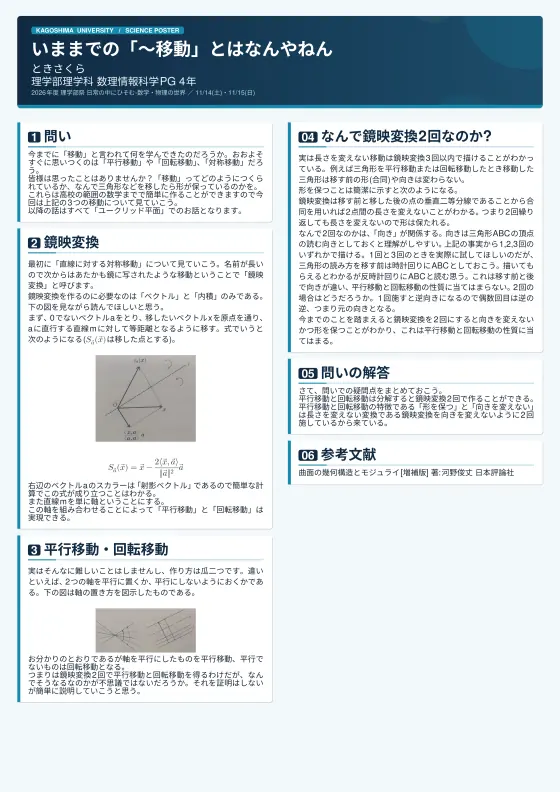
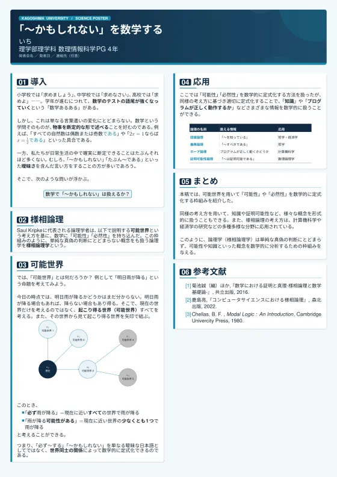
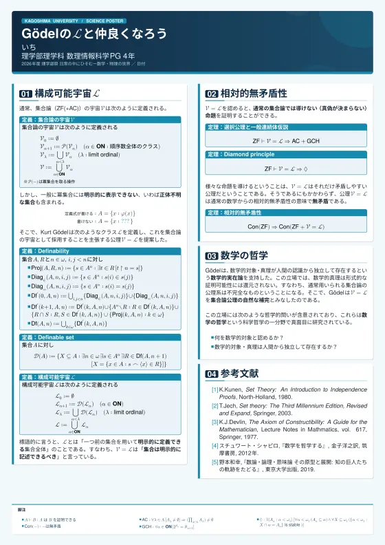
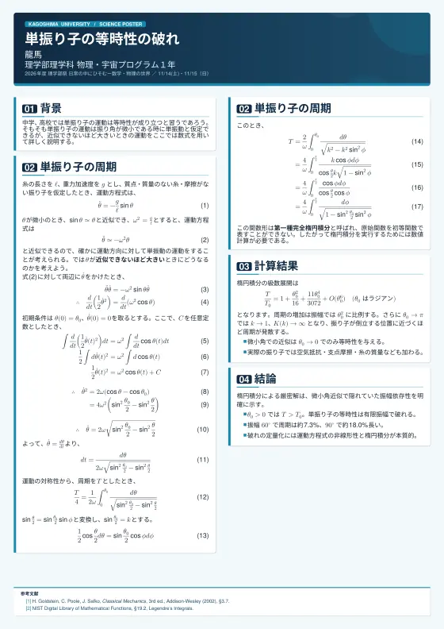
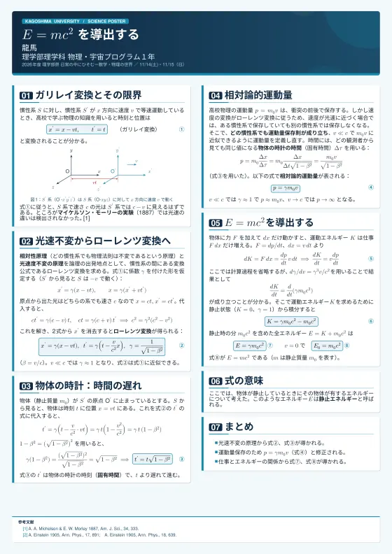
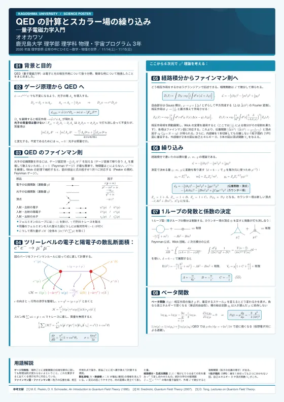

鹿児島大学 理学部祭 2026 ポスター発表企画
2026年11月14日（土）・15日（日）10時～16時 ／ 理学部1号館1階 102号講義室
大学で学ぶ数学や物理学について、理学部のメンバーが興味があるトピックをまとめ、ポスター発表をする企画です！
広く、そして奥深い世界を数式を使って解き明かし、その過程を少しでも「面白い！」と感じていただけることを目指しています。
主な対象は中高生以上ですが、高校レベルの数学、物理の知識があれば、どなたでもお楽しみいただけます！
ポスターを選ぶと全体を表示します。拡大して数式まで読めます。

数列を「微分」するいち
ジャグリングの数理ささの
いままでの「～移動」とはなんやねんときさくら
「～かもしれない」を数学するいち
Gödel の ℒ と仲良くなろういち
単振り子の等時性の破れ龍馬
E = mc² を導出する龍馬
QED の計算とスカラー場の繰り込み― 量子電磁力学入門オオカワソ鹿児島大学 理学部祭 2026「日常にひそむ-数学・物理の世界」